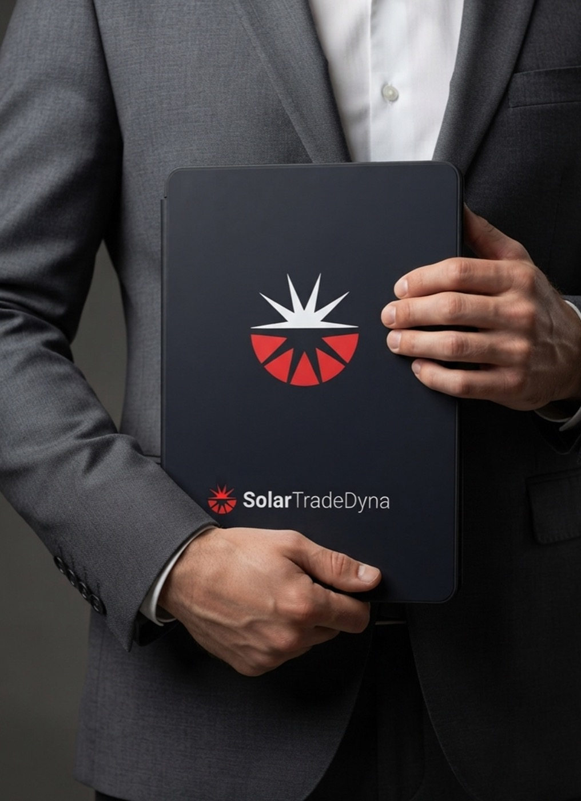

CASE STUDY · Energía / CleanTech
SolarTradeDyna
Una plataforma de energía que necesitaba proyectar confianza, escala y optimismo — del panel solar al dashboard en tiempo real.

EL RETO
El sector energético suele verse frío y corporativo. SolarTradeDyna necesitaba una marca que transmitiera solidez técnica y, a la vez, la energía optimista de la transición limpia.
QUÉ HICIMOS
Construimos un símbolo solar dinámico, un territorio de negro profundo con rojo señal, y un sistema que va del hardware al software — credenciales, dashboard, vallas y campaña. Estrategia preparada por el agente, dirección de arte humana en cada capa.
EL RESULTADO
Una identidad clara y estructurada que se siente tan confiable como su tecnología — coherente del panel solar a la analítica en tiempo real.
